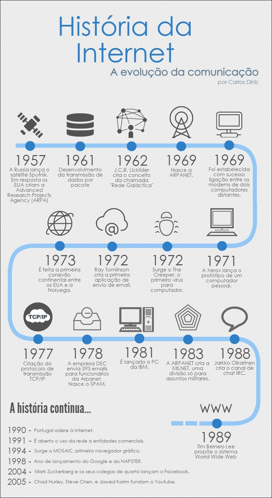

Como surgiu a Internet?
A história da Internet começou durante a década de 1960. Na época, pesquisadores buscavam uma maneira de conectar computadores e compartilhar informações entre diferentes locais.
Um dos projetos mais importantes foi a ARPANET, criada nos Estados Unidos. Ela é considerada uma das principais bases para o desenvolvimento da Internet.
.jpg)
Linha do tempo
| Ano | Acontecimento |
|---|---|
| 1960 | Pesquisas sobre redes de computadores |
| 1969 | Criação da ARPANET |
| 1983 | Uso do protocolo TCP/IP |
| 1989 | Proposta da World Wide Web |
| 1990 | A Web começa a se desenvolver |
| 2000+ | Grande crescimento da Internet |
ARPANET
Foi uma das primeiras redes de computadores utilizadas para comunicação entre instituições.
World Wide Web
A Web facilitou o acesso a informações organizadas por hiperlinks através de navegadores.
Internet atual
A internet hoje está integrada em múltiplos dispositivos, garantindo conexão constante.
Evolução da Internet
- Primeiras redes de computadores
- Criação da ARPANET
- Desenvolvimento do TCP/IP
- Criação da World Wide Web
- Popularização dos computadores
- Crescimento dos celulares e smartphones
- Internet cada vez mais presente no cotidiano
Imagem da evolução
